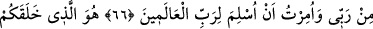
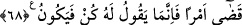

O,
HEM DİRİLTEN
HEM DE ÖLDÜRENDİR
66. (Resûlüm)! De ki: Bana Rabbimden apaçık deliller gelince, sizin Allah’ı
bırakıp o taptıklarınıza kulluk etmem bana yasaklandı ve bana âlemlerin Rabbine
teslim olmam emredildi.
67. Sizi topraktan, sonra meniden, sonra alakadan (aşılanmış yumurtadan)
yaratan sonra bebek olarak çıkaran, sonra sizi güçlü kuvvetli bir çağa erişmeniz,
sonra da ihtiyarlamanız -ki içinizden daha önce vefat edenler de vardır- ve belli bir
vakte ulaşmanız için sizi yaşatan O’dur. Umulur ki düşünürsünüz.
68. O, hem dirilten hem de öldürendir. O, herhangi bir işin olmasını dilediği zaman
yalnız «Ol!» der, o da oluverir.
Rivayete göre, Kureyş kâfirleri: “Sen baban Abdullah’ın ve deden Abdülmuttalib’in
dini hakkında bir düşünüp de bunları benimsesen ya!” deyince, Cenab-ı Hak bu âyeti
indirerek şöyle buyurmuştur:
Ya Muhammed! De ki: Bana Rabbimden apaçık deliller”; yâni Rabbimden Kur’an
âyetleri “gelince, sizin Allah’ı bırakıp da” Allah’la birlikte o taptıklarınıza” yâni
putlara “kulluk etmem bana yasaklandı.” Ehl-i Sünnete göre şer’î bir delil gelmedikçe
herhangi bir gereklilik ve yasak söz konusu olamayacağı için, böyle söylemesi
emredilmektedir. Yalnız şöyle de tefsir edilebilir: Hz. Peygamber (s.a.), aklen zaten bu
tür varlıklara kulluk etmekten menedilmiş bulunuyordu. Çünkü tevhîdin haklılığını
gösteren onca delil vardı. Ancak şer’î belgeler gönderilmek suretiyle bu yasak
pekiştirilmiş oldu. Bir de âyette Hz. Peygamber (s.a.)’in menedildiği belirtiliyorsa da
aslında menedilen başkalarıdır, diye de tefsir edilebilir. “Rabbimden” denilerek
delillerin özellikle Allah’tan geldiğinin belirtilmesi; tevhid delilleri ile hakîkat nurunun
şâhidlerinin, ancak ezelî hidâyet kaynağından doğabileceğine işârettir. Bununla birlikte,